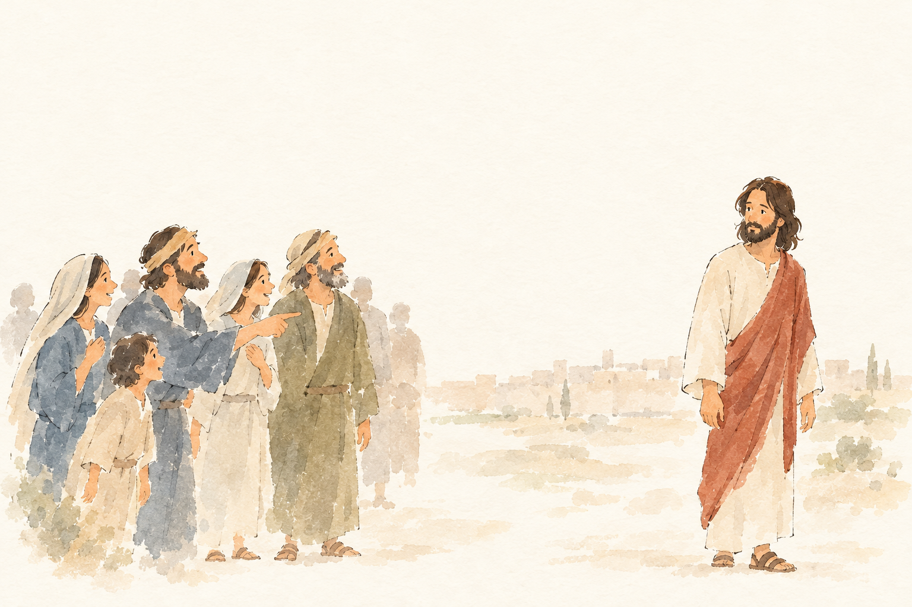
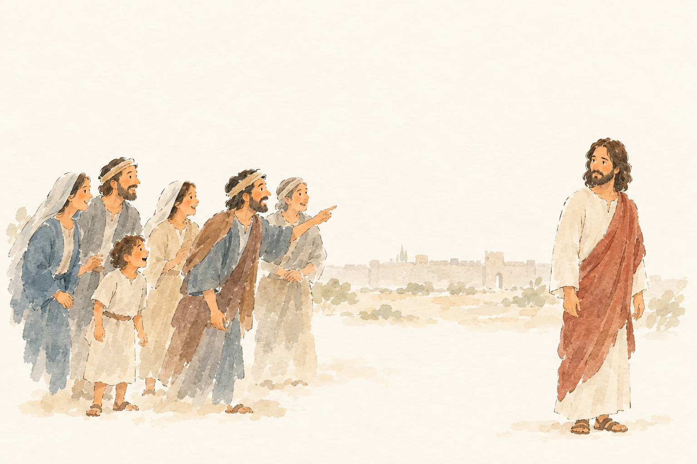
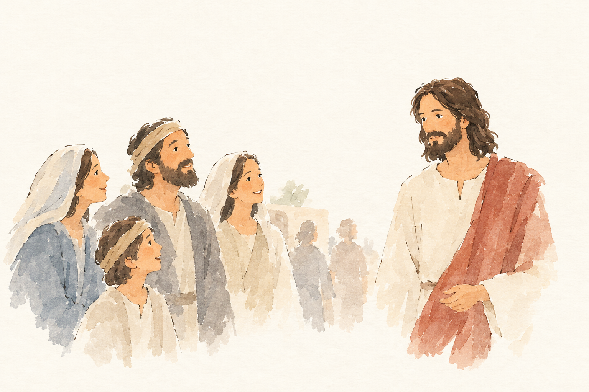
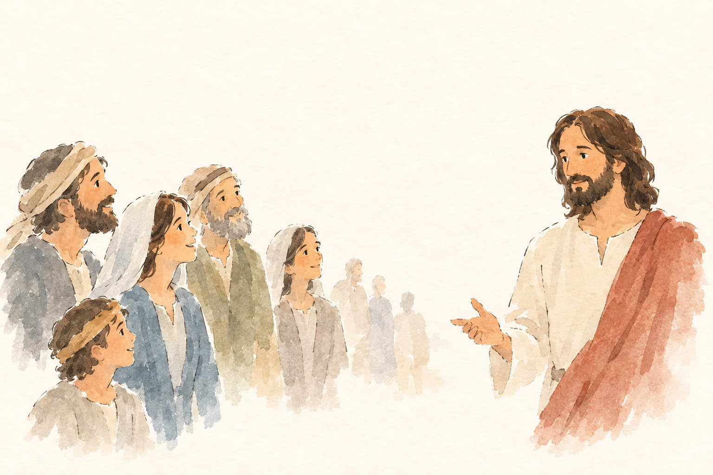
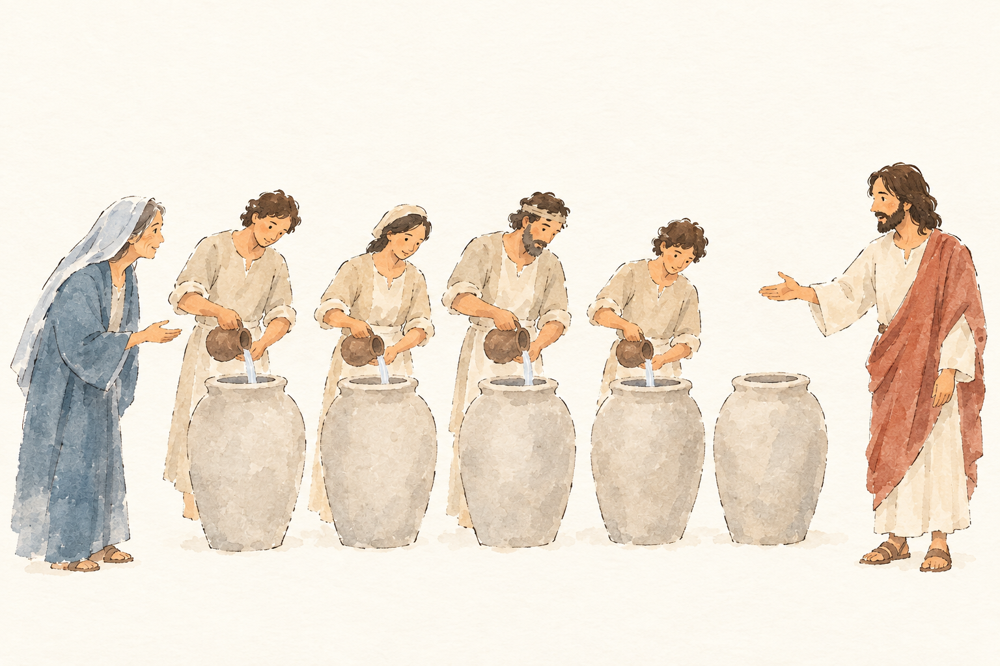
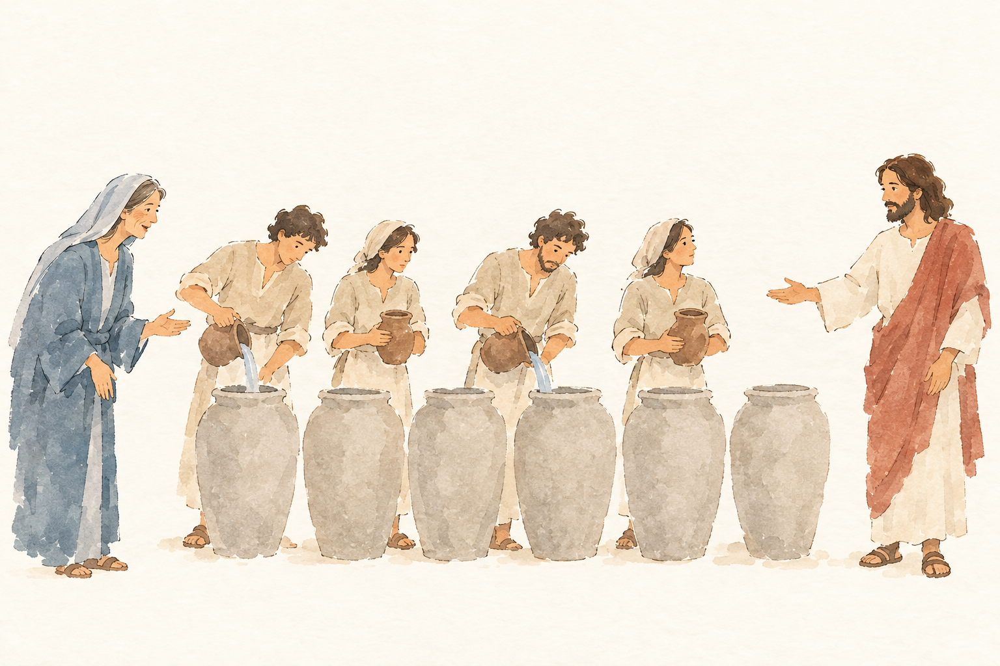

Kachel: bestanden, Kern 2 Keine wesentlichen Abweichungen; Passa/Jerusalem, die Zeichen und Jesu Wissen um das Innere der Menschen sind im Bild nicht ausdrücklich sichtbar.

JHN-002-J1__r1v1.png ✔ gewählt: bestanden, 5 Punkte, Kern 1 Es fehlen Passa/Jerusalem, die gesehenen Zeichen und dass viele an Jesus glauben; vor allem wird nicht erfasst, dass Jesus sich ihnen nicht anvertraut, weil er das Innere des Menschen kennt. Die Deutung als Johannes-1-Szene ist eher falsch.
Blind: A small group on the left is looking toward the man in white and red on the right. One bearded man in the group points at him, and the man on the right looks back calmly from a short distance away. – Possibly a Bible scene where Jesus is being pointed out to others, such as John 1, the moment someone says or implies 'Look, the Lamb of God.' This is uncertain from the visible picture alone.

JHN-002-J1__r1v2.png: bestanden, 5 Punkte, Kern 1 Teilweise passend: Menschen richten sich interessiert/anerkennend auf Jesus. Es fehlen aber Passa in Jerusalem, die Zeichen als Grund ihres Glaubens und vor allem Jesu Zurückhaltung, weil er das Innere des Menschen kennt.
Blind: A group of six people on the left are looking toward a bearded man standing separately on the right. One person in the group points at him, and the others appear interested, pleased, or surprised. – This appears to show Jesus with a group of followers or townspeople. If it illustrates a Bible story, a possible guess is a recognition or confession moment such as Peter or another disciple pointing to Jesus and identifying him as the Messiah, but the exact episode is not uniquely clear from the image alone.
Kachel: bestanden, Kern 2 Keine wesentlichen Abweichungen; Passa/Jerusalem, die Zeichen und Jesu Wissen um das Innere der Menschen sind im Bild nicht ausdrücklich sichtbar.

JHN-002-J2__r1v1.png ✔ gewählt: bestanden, 4 Punkte, Kern 1 Die Menschen wirken zwar Jesus zugewandt, aber es fehlen die Zeichen/Wunder als Grund ihres Glaubens und vor allem Jesu Zurückhaltung: dass er sich ihnen nicht anvertraut, weil er ihre Herzen kennt.
Blind: A small group of smiling people, including a child, is looking toward a bearded man in a white robe and red cloak. He faces them calmly, as if greeting, teaching, or blessing them. Several faint figures stand in the background. – This likely illustrates Jesus welcoming people, possibly the Bible scene where Jesus says to let the children come to him; the exact visible moment is a child and family looking up at Jesus as he receives or addresses them.

JHN-002-J2__r1v2.png: bestanden, 4 Punkte, Kern 1 Es fehlen die Zeichen/Wunder als Grund für den Glauben sowie Jesu Zurückhaltung: dass er sich ihnen nicht anvertraut, weil er alle Menschen und ihr Inneres kennt.
Blind: A bearded man in a white robe and red cloak is addressing a small crowd. The people on the left are turned toward him, watching and listening with calm, attentive expressions. – This likely illustrates Jesus teaching or speaking to a small group of followers; the exact biblical episode is not identifiable from the image alone.

Kachel: bestanden, Kern 1 Es fehlt der Kern: Viele glauben wegen der Zeichen, aber Jesus vertraut sich ihnen nicht an, weil er alle Menschen kennt.

JHN-002-K2__r1v1.png: durchgefallen, 6 Punkte, Kern 2 Nichts Wesentliches; das Schöpfen und Bringen zum Speisemeister wird nicht erwähnt.
Blind: Four people are pouring liquid from small pitchers into large stone jars. The woman at the left watches and gestures toward them, while the bearded man at the right gestures toward the group as if giving instructions or blessing the action. – This appears to illustrate the wedding at Cana, specifically the moment when Jesus has the servants fill the stone water jars with water before the water is turned into wine.

JHN-002-K2__r1v2.png ✔ gewählt: bestanden, 6 Punkte, Kern 2 Im Wesentlichen erfasst; nur das Schöpfen und Bringen zum Speisemeister wird nicht erwähnt.
Blind: Several people stand around large stone jars while two of them pour liquid into the jars. The bearded man on the right gestures toward the group as if giving instructions, while the others watch or carry pitchers. – This appears to illustrate the Wedding at Cana, at the moment when Jesus tells the servants to fill the stone jars with water before the water is turned into wine.

Kachel: bestanden, Kern 2 Nichts Wesentliches; das Schöpfen und Bringen zum Speisemeister wird nicht erwähnt.